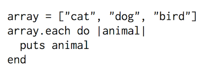
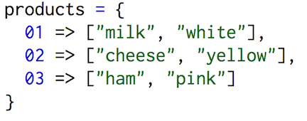

What is an array?
Both arrays and hashes are indexed collections. Both can hold any type of object in ruby, including integers, strings, booleans, and other arrays/hashes. These objects are accessible by a key- in an array the key is its index number, which begins at 0. For example, in array = ["cat", "dog", "bird"] ,
"dog" is in the 1 position.
To access it, you would use puts array[1] . To create a new, empty array in Ruby, you can use the Array.new method or square brackets array = [] . There are tons of methods that can be "called upon" an array, such as array.length , which will tell the amount of items in an array. Arrays can also be transformed or "concatted" (added) to other arrays.
What is a hash?
In a hash, there are key-value pairs. To access the values, you call upon the key name. For example, in hash = {"Mittens" => "cat", "Skip" => "dog", "Tweety" => "bird"}
To access dog, you would use
puts hash["Skip"]. To create a new, empty hash in Ruby, you can use the Hash.new method or with curly brackets hash = {} . Like arrays, there are methods that can be called upon hashes. For example, hash.values will return an array of all the values in the hash. A list of all the methods that can be used in arrays and hashes can be found here.
When to use arrays vs hashes
There are many similarities between arrays and hashes. They are both collections of objects that can be transformed and "iterated" across. To iterate over an array or a hash means to go through each element one after another.An example of an iteration is:

which will return
cat
dog
bird
This iteration went through each element in the array and puts (put string) it, or print each element on its own line. When iterating across hashes, two values are passed to the block, where |animal| is, to include both the key and the value in the iteration. There are some instances when you would want use a hash instead of an array. Hashes are used for more complex filtering and selection operations. Sometimes, hashes and arrays will be used in conjunction with one another. For example, if you want to match a product id to an array containing information about the product.

Basically, an array is used when you want an ordered collection on objects, accessible by index and hashes are used when you want values matched to key ids, accessible through the keys.